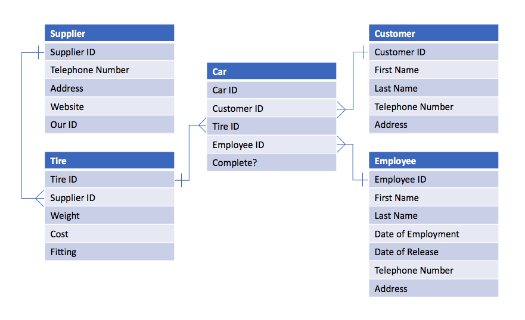

Hello, my name is Marley Sudbury. This is a page I have written about databases. Becuase, say it with me now, I have no life.
An entity relationship diagram (ERD) is a fundamental part of planning a relational database. This shows the various tables of the database and how they relate to each other. There are two types of relationship in a normalised relational database, one-to-one and one-to-many. Here is an example.
Scenario: A man runs a company which puts tires on cars. He orders tires from suppliers, and has a list of customers and cars. Draw an entity relationship diagram (ERD) of a computer based system he could use.
This shows quite clearly the relationship between the various fields in the tables. As you can see, each table has its own 'ID' field, which would be a primary key field (for those who don't know, a primary key is used to uniquely identify each record in a table). The ends of the line with 'crows feet' are the many end of the relationship, whilst the other ends have a '1' put through them. Also, note that the table names are singular, as this is an industry standard.
Although most industry use of databases is done with network technology, such as SQL, for local solutions I find that Microsoft's Access is perfectly acceptable, as it is fully-featured, and hassle-free to set up. It is also free with my Office 365 account, provided by my school ;).